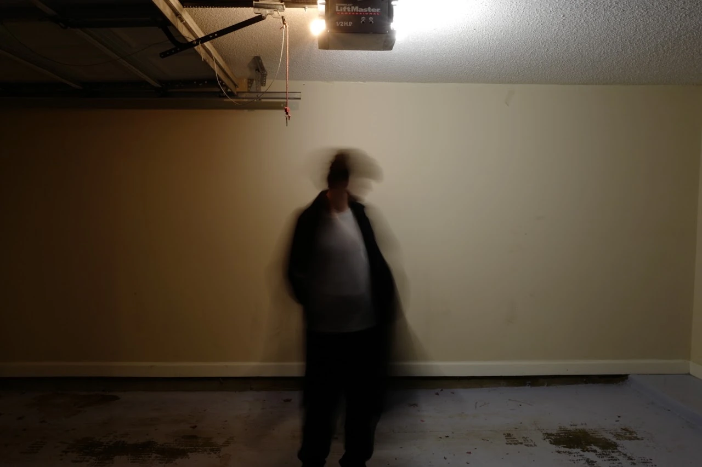

Concept photographyTrauma-Induced Dissociative AmnesiaSmart ChenView Polaroid of Yesterday stillsConcept photography for Polaroid of Yesterday.Image unavailable. Open the original photograph.Image unavailable. Open the original photograph.Image unavailable. Open the original photograph.Image unavailable. Open the original photograph.Image unavailable. Open the original photograph.Image unavailable. Open the original photograph.Image unavailable. Open the original photograph.Image unavailable. Open the original photograph.Image unavailable. Open the original photograph.Image unavailable. Open the original photograph.Image unavailable. Open the original photograph.Originally published on VegShark.com

 Image unavailable. Open the original photograph.Image unavailable. Open the original photograph.
Image unavailable. Open the original photograph.Image unavailable. Open the original photograph.